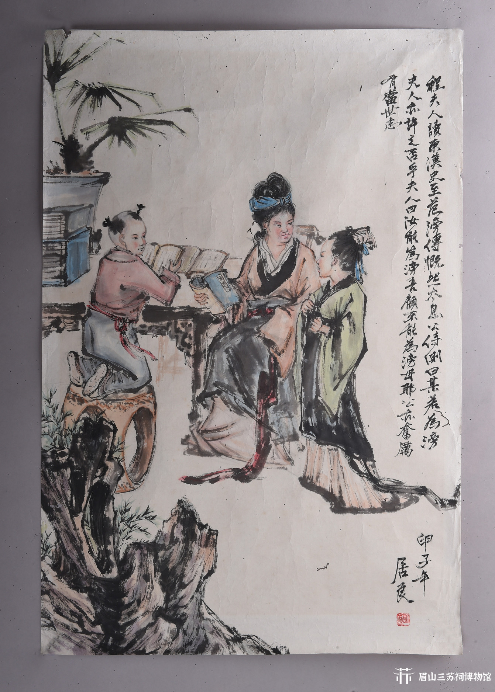

程夫人出身于书香门第，自幼受到良好的教育，精通诗书礼仪。她深知教育子女的重要性，常常亲自教导苏轼、苏辙读书写字。据《东坡志林》记载，程夫人在苏轼、苏辙幼年时，就教导他们诵读《诗经》《论语》等经典，培养他们的文学素养和道德品质。
程夫人特别注重子女的品德教育，常对苏轼、苏辙说："为人当以德为本，学问次之。"她以身作则，言传身教，使苏轼、苏辙从小就养成了正直诚信、勤学好问的良好品格。
程夫人去世时，苏轼年仅十七岁，苏辙十五岁。临终前，她嘱咐两个儿子："汝兄弟当以文章报国，不可慕势利，苟合取容。"这句话深深影响了苏轼、苏辙的一生，成为他们立身处世的准则。
